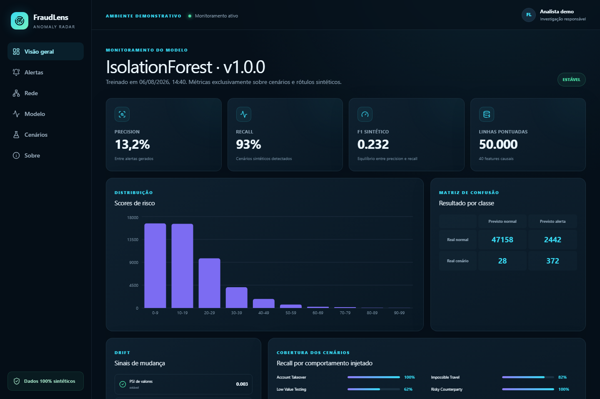

01 / 07
FL / CASE 000073
FINANCIAL FORENSICS · SYNTHETIC DATA · 2026
FRAUDLENS
INTELLIGENT PAYMENT
ANOMALY RADAR
INVESTIGATION PRIORITY
95
CRITICAL / REVIEW
NEW_DEVICE
R$ 27.500
PIX / 02:01
ACC-000073
TX / SYNTHETIC23.06.202602:01NEW DEVICEANOMALY DETECTED
Do pagamento ao sinal.
Do sinal à explicação.
FRAUDLENS / INVESTIGATION FILE
02 / 07
MONITORED TRANSACTION VOLUME
50,000
TRANSAÇÕES SINTÉTICAS
08:1123.06.2026BOLETOR$ 68ALERT
02:5923.06.2026PIXR$ 25.000ALERT
02:0723.06.2026PIXR$ 35.000ALERT
02:0523.06.2026PIXR$ 32.500ALERT
02:0323.06.2026PIXR$ 30.000ALERT
02:0123.06.2026PIXR$ 27.500SIGNAL
22:0222.06.2026PIXR$ 99HISTORY
ONE SIGNAL / THOUSANDS OF RECORDS
MOST PAYMENTS
LOOK NORMAL.
THAT'S THE PROBLEM.
Em milhares de operações,
quais realmente merecem atenção?
FRAUDLENS / INVESTIGATION FILE
03 / 07
INPUTPAYMENTACCOUNT / 000073
TIME
DEVICE
AMOUNT
LOCATION
COUNTERPARTY
VELOCITY
HISTORY
ANALYSISISOLATION FOREST+RULE ENGINE
PRIORITY95HUMAN REVIEW
40CAUSAL FEATURES
13EXPLAINABLE RULES
1UNSUPERVISED MODEL
FRAUDLENS / INVESTIGATION FILE
04 / 07
 EVIDENCE / 01PRIORITY QUEUE · 95
EVIDENCE / 01PRIORITY QUEUE · 95
 EVIDENCE / 02ACCOUNT + TIMELINE
EVIDENCE / 02ACCOUNT + TIMELINE
 EVIDENCE / 03DEVICE + COUNTERPARTY
EVIDENCE / 03DEVICE + COUNTERPARTY

EVIDENCE / 04MODEL CONTEXT
INVESTIGATION
PRIORITY95
SYNTHETIC RECORD
TRACEABLE CONTEXT
REAL FRAUDLENS SCREENSHOTS · 100% SYNTHETIC DATA
FRAUDLENS / INVESTIGATION FILE
05 / 07
SYSTEM BLUEPRINT / REV 1.0
NOT A
MODEL.
A SYSTEM.
PYTHON 3.12FASTAPINEXT.JSPOSTGRESQLDOCKER
01INPUTSYNTHETIC DATA
02CONTEXTFEATURE ENGINEERING
03DETECTIONMODEL + RULES
04PRIORITYEXPLAINABLE SCORE
05DELIVERYFASTAPI
06CONTEXTINVESTIGATION UI
07DECISIONHUMAN REVIEW
FRAUDLENS / INVESTIGATION FILE
06 / 07
MEASURED RUN / SYNTHETIC SCENARIOS
NUMBERS
WITH CONTEXT.
93%RECALLsynthetic scenarios detected
0.8523PR-AUC
50KTRANSACTIONS
1KACCOUNTS
8SCENARIOS
2,814ALERTS
0.2315F1
HONESTY CHECK / REQUIRED13.22%PRECISION
SYNTHETIC
DATA ONLY
These metrics do not represent production performance.
FRAUDLENS / INVESTIGATION FILE
07 / 07
FINAL NOTE / HUMAN DECISION REMAINS IN THE LOOP
DETECTARÉ SÓ O COMEÇO.O DIFÍCILÉ EXPLICAR.
FraudLens
DATA × ML × SOFTWARE × SECURITY
github.com/GabrielBuck/fraudlens
INVESTIGATION PRIORITY, NEVER PROOF OF FRAUD.